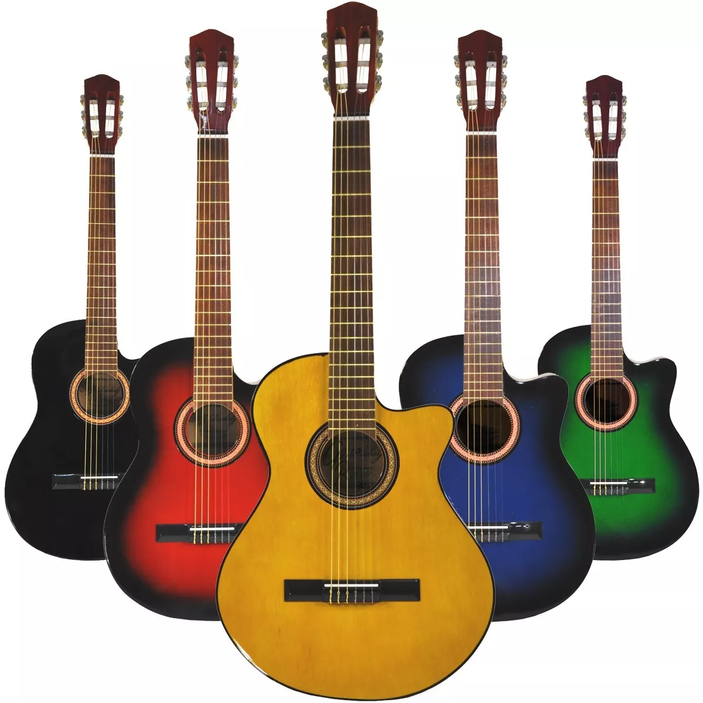
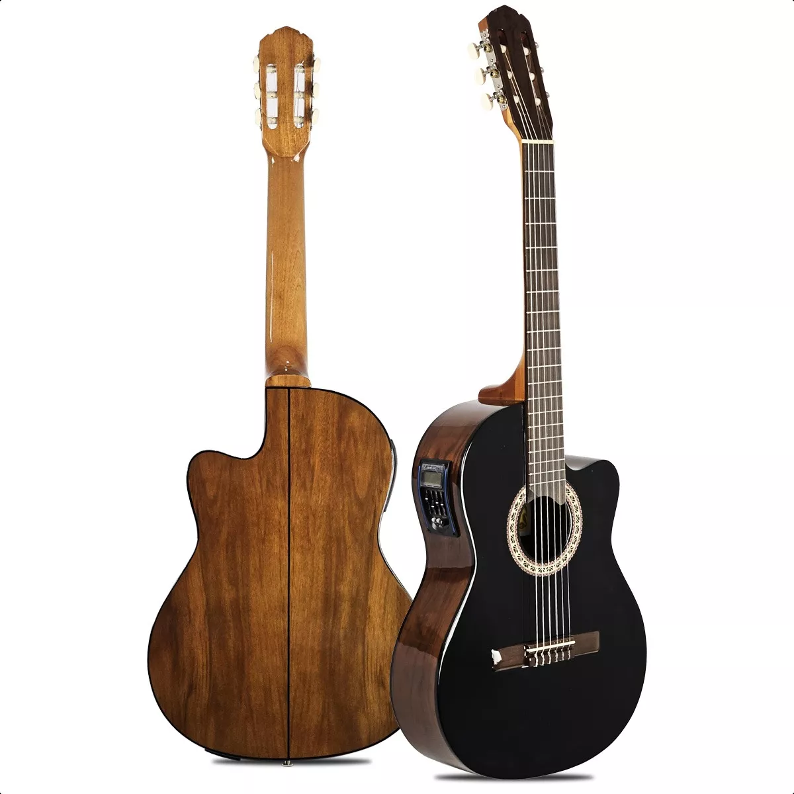

Nuestros modelos de Guitarras

Redondas
Las guitarras redondas son una opción popular para músicos de todos los niveles, ya que son versátiles y tienen un sonido cálido.

Con Corte
Las guitarras con corte, tienen una hendidura en la parte superior del cuerpo del instrumento que permite un acceso más fácil a los trastes superiores.

Electro Acusticas
Las guitarras electroacústicas son instrumentos musicales armónicos que tienen pastillas y un micrófono, que permiten amplificar el sonido a través de un amplificador o un sistema de sonido.